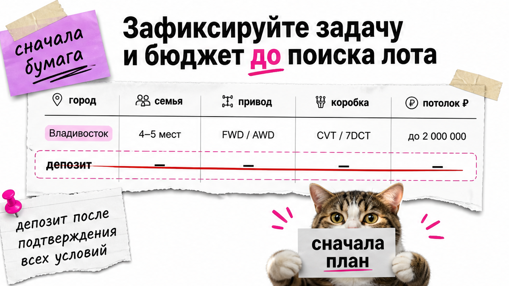
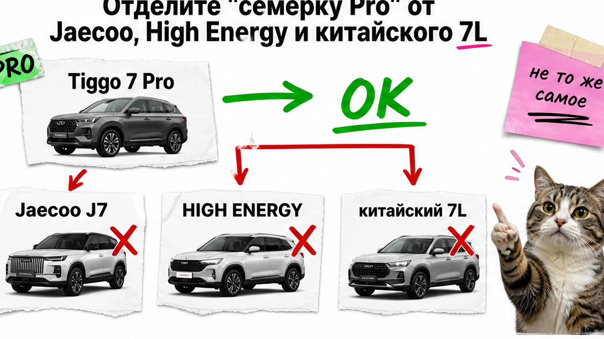
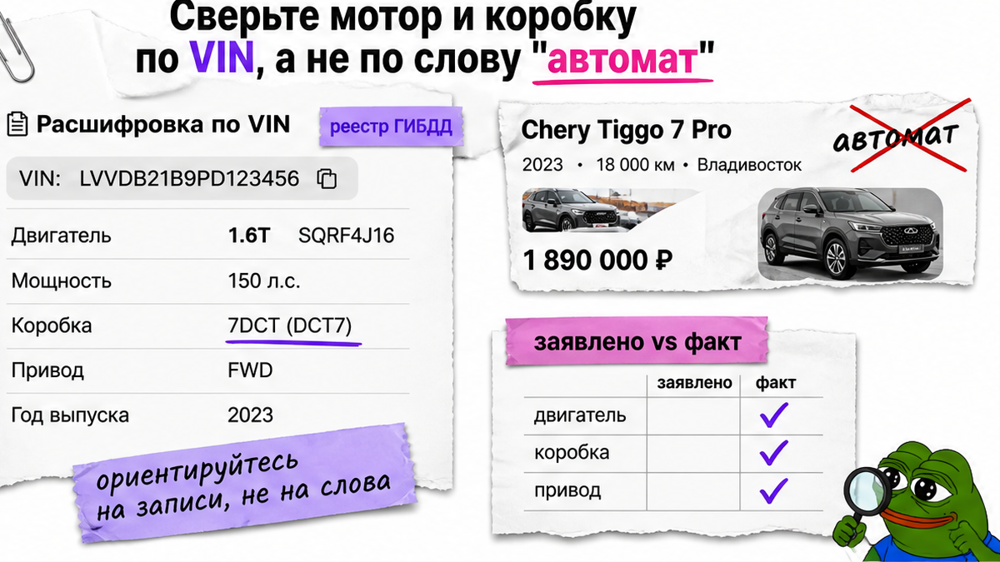

Увидел объявление "Tiggo 7 Pro Max полный фарш из Китая" и уже тянешься к предоплате: вроде как у дилера, только дешевле. Боль в том, что без VIN легко купить чужую табличку – другой мотор, урезанные опции или вообще Jaecoo под похожим именем. Ниже – чеклист до депозита: имя модели, силовой агрегат, опции и документы 180 дней. Результат: таблица "заявлено vs факт" и стоп, пока пакет не собран.
Инсайт до депозита: До депозита нужны VIN конкретной машины, строки "мотор / коробка / привод" с шильдика и список заводских опций в договоре. Имена Pro, Pro Max, китайский 7L, High Energy и Jaecoo J7 – не одно и то же. Правило 180 дней проверяете пакетом документов, а не обещанием менеджера. Смета под ключ через Владивосток – после фактов, не вместо них.
Это не гайд про Tiggo 8 Pro и не гонка "кто дешевле в объявлении". Мы в Авто-Сейлс во Владивостоке сначала останавливаем путаницу имён, потом сверяем железо и бумаги. На практике человек теряет депозит не на таможне, а на фразе "ну это же топ, только из Китая".

Пока нет бумаги с задачей, любое объявление кажется "тем самым". Напишите коротко: город, семья, нужен ли полный привод, готовы ли вы к вариатору CVT (бесступенчатая коробка – плавно, но это не "классический автомат") или только к роботу, потолок бюджета без магической цены с баннера.
Типичная ошибка – искать "самый полный фарш" и уже потом думать, потянете ли вы мотор 1.6 по утильсбору и логистику. Сделайте: зафиксируйте задачу до чата с менеджером. Не делайте: обсуждать депозит, пока в переписке нет вашей одной фразы "что именно нужно".
Схема до денег:
Задача на бумаге → Целевое имя модели → VIN → Мотор/коробка/привод → Опции на видео → Пакет 180 дней → Договор → Смета / депозит

Вот сюрприз 2026 года: в Китае имя Tiggo 7L – другая машина на базе Omoda C7 (колёсная база около 2720 мм), а российский Tiggo 7L / Tenet T7 ближе к линии Pro Max. Плюс Tiggo 7 High Energy на внутреннем рынке – по сути Jaecoo J7 / Tansuo 06, а не "наш" Tiggo 7 Pro. Если менеджер путает базу и длину – стоп: иначе дорого чинить ошибку словами.
Классическая карта имён (Дром и обзоры 2026): российский Pro часто = китайский "просто Tiggo 7", Pro Max ближе к Plus. На странице Chery CN для "нового" Tiggo 7 на 2026-11-01 – три комплектации 1.5T CVT, ориентир 79 900–91 900 CNY, габариты около 4530×1862×1695, база 2670 мм. Это якорь "просто семёрки", не соседних ярлыков.
| Ярлык в чате | Что это часто значит | Стоп-сигнал |
|---|---|---|
| Tiggo 7 / "Pro" под РФ | Линия компактной семёрки; на CN часто 1.5T CVT | Нет VIN и нет кода мотора |
| Pro Max / Plus | Более "старшая" ветка; на CN у 1.6 мощность может отличаться от РФ | "Как в РФ Ultimate", без листа машины |
| High Energy / Jaecoo J7 | Другая модельная линия, не "наш" Pro | "Это то же самое, только красивее" |
| Китайский 7L | Ближе к Omoda C7, другая база | Путают с российским 7L / Tenet T7 |
Сделайте: назовите машину одной фразой с рынком и мотором, например "китайский Tiggo 7 1.5 CVT, не Jaecoo". Не делайте: принимать "семёрка топ" как точное имя. Выберите ярлык до поиска лота.

VIN – это идентификатор конкретной машины (табличка и документы), а не красивый скрин чужого обзора. Без VIN разговор о депозите не начинаем. Дальше выписываете с листа или шильдика: 1.5 или 1.6, заявленные л.с. или кВт, тип коробки CVT25 или 7DCT (робот с двумя сцеплениями).
Например, для китайской 1.5T линейки в карточках 2026 часто около 156 л.с. / 115 кВт – цифру берёте с документа машины. У Pro Max на CN часто мелькает 1.6 около 197 л.с., а российские дилерские цифры по той же ветке могут отличаться – сравнивать рынки вслепую опасно.
Слово "автомат" ничего не доказывает: вариатор и робот едут по-разному, а на утиль влияет мощность. Если обещают полный привод – нужны фото днища/муфты и код привода; шильдик "4WD" без подтверждения не факт (на CN у части 1.6 часто только FWD).
Сделайте: пишите факты с документа машины и проверьте мощность до оплаты. Не делайте: копировать чужую комплектацию. Используйте только лист этой машины.
Схема подмены простая: в карточке – панорама и камеры 360, по факту – заглушки парктроников и другой пакет. Список опций в рекламе без привязки к VIN – это пожелание, не контракт. На пальцах: заводская комплектация – то, что стоит на кузове и в меню; "или аналог" в договоре – дыра под ваш "топ".
Пакет до депозита: свежие фото/видео с VIN в кадре + перечень заводских функций письменно, без формулировки "или равноценное". Актуальный подбор и расчёт смотрите в каталоге avto-sales125.ru, уточнения по VIN – в Telegram avtosales125.
Сделайте: потребуйте видео именно этой машины. Не делайте: оплачивать "очередь на топ", пока опции не зафиксированы. Избегайте формулировок "или аналог" в договоре.
С 2026 года для экспорта из Китая важно правило 180 дней: машина должна "созреть" по срокам регистрации/экспорта, иначе сделка встаёт. Вам не нужен диплом брокера – нужен стоп, если бумаг нет. Иначе проблема всплывёт уже после депозита.
Если нет трёх из пяти базовых пунктов – перевод останавливаете. Сделайте: соберите пакет до денег. Не делайте: верить фразе "документы потом, сейчас только депозит".
Критерий успеха: в чате есть VIN, таблица "заявлено vs факт" и список документов до оплаты. Без этого депозит не обсуждается. Смету под ключ через Владивосток собираете после пунктов ниже – без чужих "цен под ключ" как обещания. Так вы сможете остановить перевод вовремя.
Нужен расчёт под VIN – откройте каталог Авто-Сейлс до перевода. Офис во Владивостоке (Днепровская 40а, стр. 4) – хаб СВХ и выдачи, не кнопка "оплатить сейчас".
Сделайте: идите по чеклисту сверху вниз. Не делайте: пропускать VIN ради "скидки только сегодня".
Материал проверен: Редакция Авто-Сейлс (эксперты по авто под заказ из Японии, Кореи и Китая).
Достоверность: факты сверены с официальной страницей Chery CN (tiggo7new), материалами Дрома по неймингу Pro/Pro Max, публикациями Колёс о Tiggo 7L / High Energy / Jaecoo и чек-листами по правилу экспорта 180 дней (в т.ч. AutoProfi Asia); актуальные расчёты под заказ – в каталоге.
На практике Pro чаще ближе к китайскому "просто Tiggo 7" (часто 1.5T CVT), а Pro Max – к более старшей ветке / Plus с другими моторами и пакетами. До депозита сравнивайте VIN и шильдик, а не ярлык в заголовке объявления.
Нет. Требуйте VIN, свежие фото/видео этой машины и перечень заводских функций в договоре без "или аналог". Нет VIN – нет разговора о предоплате.
Соберите пакет: VIN, мотор/коробка/привод с документа, опции на видео, скан китайского ПТС с датой, фото VIN-таблички и условия возврата депозита. Без трёх из пяти базовых документов – стоп.
Да, особенно через ярлык High Energy / Tansuo 06. Это другая линия. Если нужна именно семёрка Pro, прямо напишите отказ от Jaecoo и китайского 7L на базе Omoda C7.
Выпишите тип коробки с листа машины: CVT или 7DCT. Слово "автомат" в рекламе не используйте как факт. Занесите тип в таблицу "заявлено vs факт" до оплаты.
Нет. Tiggo 8 Pro – другой класс и другая статья. Здесь фокус на ловушках имён и комплектаций именно у семёрки до депозита.
Передайте сверку VIN и документов команде до оплаты. В Авто-Сейлс это подбор через avto-sales125.ru и Telegram avtosales125 – без форм на странице блога и без перевода вслепую.